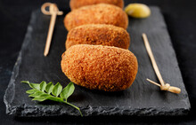

Croquettes

Croquettes are enjoyed in many places of the world and vary from region to region. For instance, some recipes include ham or crab. This recipe is based off the Japanese standard of croquettes that feature a potato and ground beef mixture within a crispy Panko shell that you will be sure to love.
Ingredients
Steps
- Peel and cut potatoes then add to lightly salted water. Boil potatoes till fork tender.
- Prepare ground beef and onion mixture while the potatoes boil. Add a tablespoon of oil to a frying pan, set heat to medium high. Then add diced onion and cook till translucent.
- Add ground beef to frying pan with onion, season with seasoning salt and black pepper. Stir the mixture occasionally till fully cooked.
- Once the potatoes are done, drain and add to a large bowl. Mash potatoes thoroughly. Add butter, milk, seasoning, and ground beef/onion mixture. Combine.
- Place the mixture from the previous step into the fridge for half an hour to set up. Then take out of the fridge to form into around 3 inch oval patties half an inch thick.
- After forming all of your patties, you'll then coat in flour, then beaten egg, and finally in panko breadcrumbs.
- At this point they are ready to fry until golden brown in vegetable oil and can then be enjoyed after cooling for about 10 minutes.